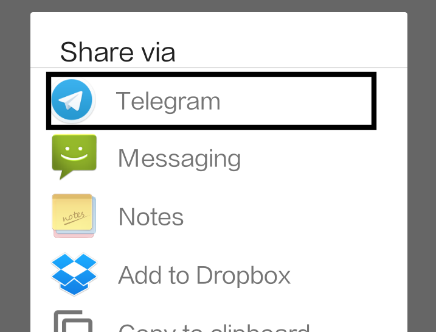

MarkIt! is a personal bookmarking bot for people who like privacy and simplicity.
It is a free-to-use Telegram bot with no ads.
Store and retrieve bookmarks easily on both mobile and desktop. There is no need to install a separate bookmarking app.
Option 1: Copy and paste the link into the Telegram chat with MarkIt!
Option 2 (on mobile): Share to Telegram chat with MarkIt!
For further comments and queries, please contact sayhello@markitbot.com
For more details on why we built this bookmarking tool, please go to our blog.